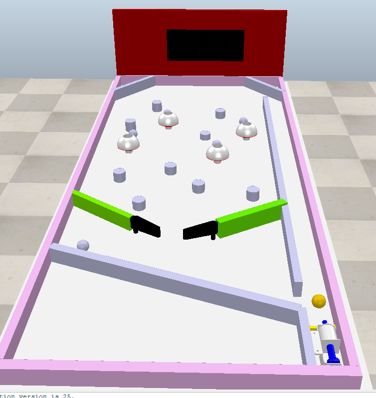

Eleven <<
Previous Final Report
期末口頭與書面專題報告 (30%)
期末口頭專題報告影片：
其Flipper底部還需將為補上的電池等零件補上、推桿的擊球模擬還未完善，現在球都只會在設定的地板上移動，還未解決穿模問題。以下是目前所完成的進度，現在組合起來後，程式做動後能依照所點擊的W S E D P L Q T控制Flipper和推桿進行做動，如下方影片：
後續更新版本由 41223136 完善彈珠檯與球的實體碰撞問題
後續彈珠檯改善內容如下：
得知 CoppeliaSim模擬軟體內能夠設定平面重力方向，把原先繪製的邊框地板移除，以軟體本身內建功能叫出碰撞牆壁，由組員 41223136 將彈珠台重新設計後額外加上感測器及記分板。
後面依照其完成後結果為範本自己再去嘗試練習組合後程式執行時發現並解決：
1.球滾回來時會跑到推球桿後面，導致擊球受阻。
將前方設置擋板後，另外再將推球桿的力量調整到可以順利通過所設計的球道
2.阻擋球的兩隻推桿之間需有間距，否則在測試時發現如果同時操作兩隻作動，球又剛好落於中間，會導致推桿卡死。
其中右推桿擊球時力道不足且緩慢，也重新將其速率及位置做了調整
以下是所完成的：41223118_pinball.7z

期末書面專題報告檔案 (pdf):
初版報告內容進度：pinball_Report_1
修改新增後報告：pinball_Report_2
電腦輔助設計與實習課程總結心得:
本門課程中，相較於大一時的課程內容我認為是增加了許多，在這過程中漸漸發現自己的短版，大一時所運用的git的控制程式他的單字簡短好記，所以在那時操作上雖會有點生疏，但多做幾次後便會熟悉並運用了，但這學期的課程發現所運用到的單字及專業術語開始多起時，我發現我開始吃不消了，需要花費比大一時還要更多的時間去補齊我在以前所缺失的經驗，雖然我們是華人社會學習是以中文為主，但未來我們在自己的專業領域上，英文才會是這個領域的主流基礎，我們所引入技術、網路上查詢的程式語言用的也是英文。
這門課不只讓我知道我需要不齊甚麼，還讓我知道了團隊合作的重要性，在之前的課程內容裡，很多事情我都是覺得我自己能做到的我就全都自己去完成，做到現在發現開始有點吃不消了，透過這次的彈珠台報告，讓我發現有些時候把事情跟別人一起完成效率，遠比自己那做得要死要活來的好，透過這次的分工不僅讓我解決了許多重複繁瑣的事，也讓我能有更多時間去思考和研究這門課更多更深層的內容。
期末報告自評成績:
完成上述流程後, 請將 Final Report 自評分數輸入 cad2024 自評表單中.
Eleven <<
Previous